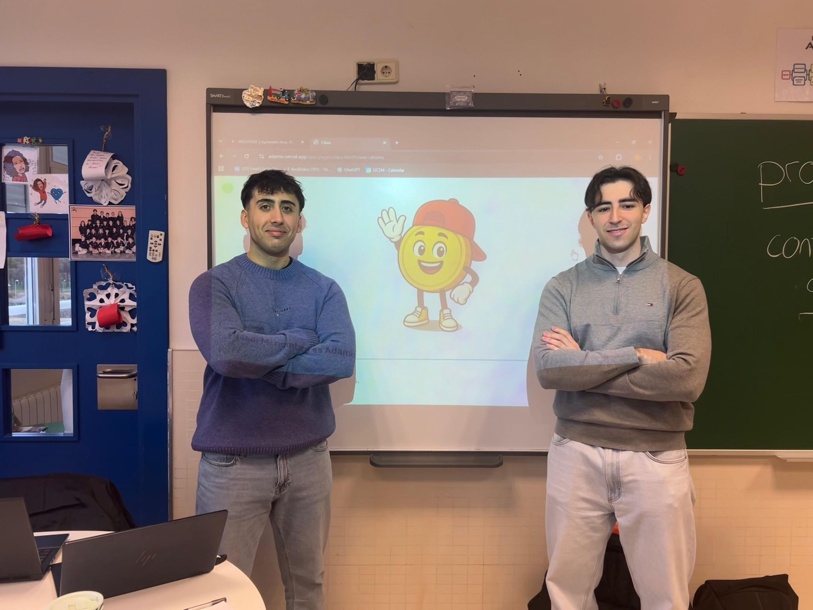

Proyecto ADAMIS
Ver AdamisEducación Financiera para niños de 10 a 12 años
Vídeo próximamente
Impacto
Más de 200 alumnos ya han probado la app
Recogemos feedback continuo en aulas reales para iterar y mejorar el producto.


Despliegue
Introduciéndolo en colegios poco a poco
Actualmente estamos haciendo pilotos en centros, formamos al profesorado y refinamos contenidos de manera continua.
¿Tienes preguntas?